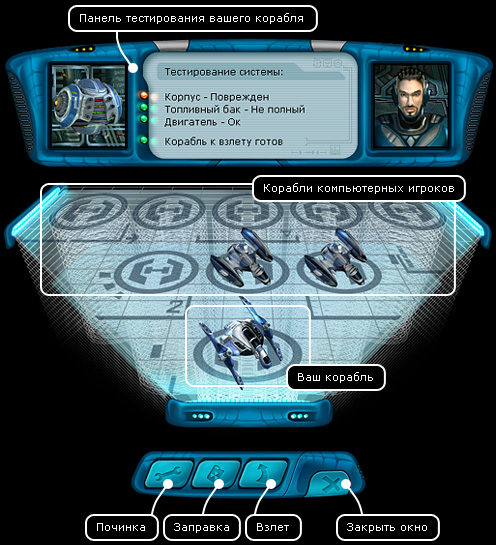

Руководство рейнджера > Экран
планеты > Ангар (H)
|
Руководство рейнджера > Экран
планеты > Ангар (H)
|
| Ангар (H) Данное окно представляет собой проекционный вид ангара, с расположенными в нем кораблями. Здесь можно починить корпус своего корабля, посмотреть начинку других кораблей, заправиться и взлететь с планеты. Для удобства робот в левой части панели тестирования всегда извещает пилота о состоянии важнейших систем корабля (корпус, двигатель, топливные баки). |

| Ваш корабль всегда находится на первом ближнем посадочном месте. Если двигатель или топливные баки не установлены, то взлет с планеты будет невозможен. В этом случае вам надо посетить магазин оборудования и купить все необходимое, после чего установить приобретения в соответствующие слоты, вызвав диалоговое окно "Корабль" (S). Чтобы посмотреть начинку других кораблей: • Щелкните правой кнопкой мышки по нужному кораблю, вы увидите его начинку, даже если у вас не установлен сканер (по своему кораблю тоже можно кликать). Чтобы починить корпус корабля: • Нажмите кнопку "Починка" (A) в нижней части окна. Кнопка будет доступна, только если корпус действительно поврежден. Чтобы заправиться: • Нажмите кнопку "Заправка" (B). Кнопка будет доступна, только если баки не заполнены топливом полностью. Чтобы взлететь с планеты: • Нажмите кнопку "Взлет" (F). Совет. Всегда заправляйтесь перед взлетом! Если баки не заполнены полностью, то когда вы окажетесь в космосе, вам может не хватить топлива для совершения перелета в другую систему, и тогда придется снова возвращаться на планету. |